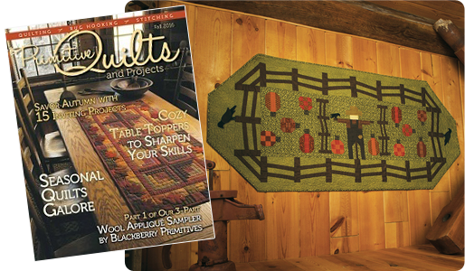
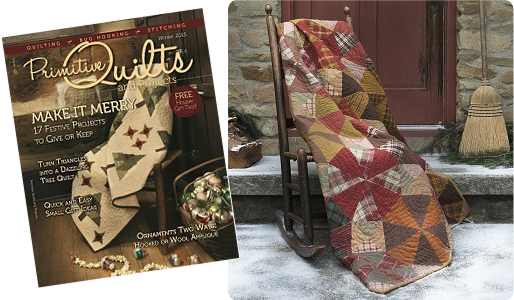
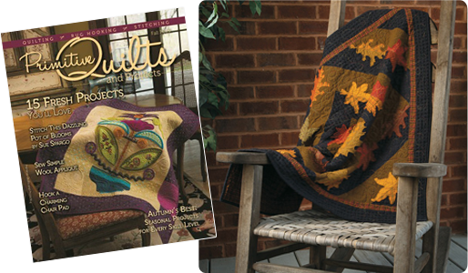
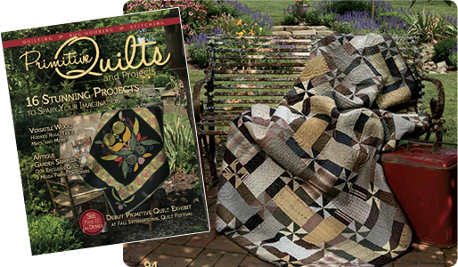

Primitive Quilts & Projects

Cream of the Crop
Fall 2016
A friendly scarecrow watches over a bumper crop of patchwork pumpkins in this pieced table runner accented with wool crows. Buy the pattern here!

Plaid-o-scope
Winter 2015
Captivated by the multi-angled block design of a hand-pieced antique kaleidoscope quilt, I wanted to create a similar look that didn't require hand-piecing or a template. Buy the pattern here!

Maple Leaf Ragged
Fall 2015
A raw edge applique technique gives the windblown leaves in this festive fall table topper a three-dimensional effect. Buy the pattern here!

Pebble Beach
Summer 2015
If you have ever collected beach pebbles on a gloomy California June day, you know what inspired this color palette of tan, gray, taupe, black, and brown that blends so beautifully. Buy the pattern here!